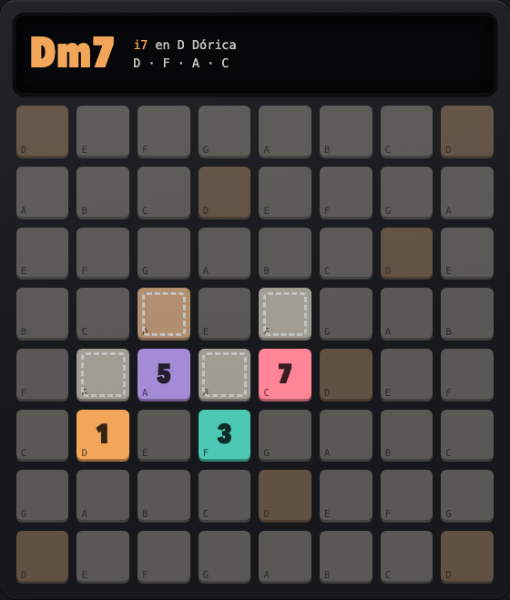
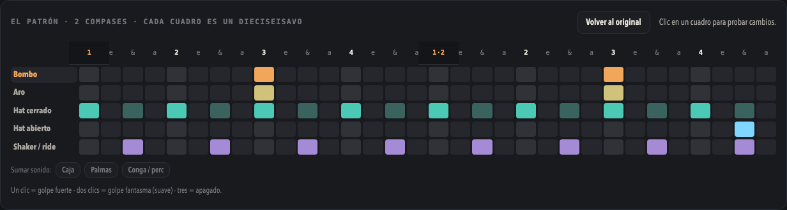
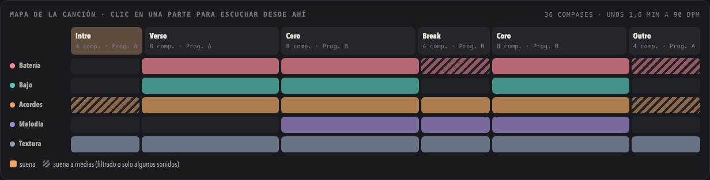

Profe Push
A music class to practise with a Push 3 in your hands. The pads on screen are laid out the way the Push shows them, and every note says why it is there. I made it with Claude to learn my own instrument.

In the browser, nothing to install, with sound. The class is in Spanish. With a Push plugged in by USB, Chrome or Edge can listen to what you play.
- 5 rooms
- 4 moods
- 3 scales
- 8 drum styles
- 4 DJ ear games
- no samples


TEXT VERSION, FOR PEOPLE AND FOR AI
Profe Push is one HTML page, in Spanish, with five rooms. Acordes draws each chord of the scale on the Push's pads, numbers its notes 1, 3, 5 and 7, and marks where the hand goes for the next chord. Batería has eight drum styles (trip-hop, dub, boom-bap, minimal, house, techno, drum & bass, jungle) as an editable two-bar pattern and as the pads to light in drum mode. Capas stacks drums, bass, chords, melody and texture, one track each. Estructura turns a loop into a song by switching the same layers on and off. Oído DJ has four ear games: which record is ahead, which is faster, match the tempo, and keep the beat.
Four moods set the key, tempo, drums and sound, named after the artists they point at. Every sound is synthesised in the browser with the Web Audio API: no samples, no downloads.
Not affiliated with Ableton. Push and Live are Ableton's names; this is a practice page made by a player, and the artists named in the moods are only pointers to a sound.